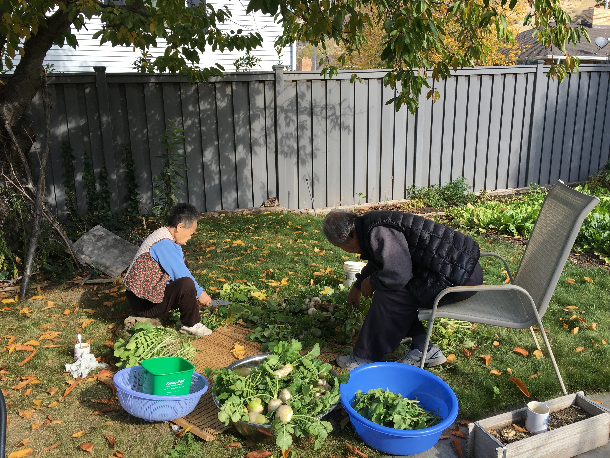
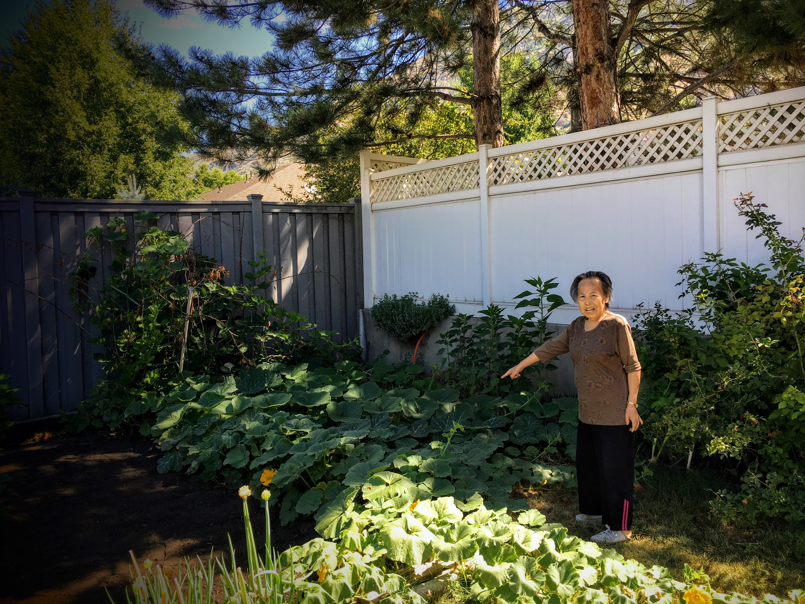

For the last 12 years of her life, my mother lived in a white brickhouse.
.JPG)
The house was built on a slight slope, so that the east side of the house sat higher than the west.
It also meant, front of the house had 7 stair steps, where as it took 14 stairs to get to the basement. The basement opens up to the ground level on the west side.
From her kitchen, she could see the Y-Mountain. Mount Timpanogos can be seen from the living room.
Mother and Father would convert a yard with grass into a gardening area that produced vegetables year around, except for the winter.

It contradicted what I envisioned as a retired person. In fact, my mother farmed until the very last, worked during the season of growing.

She was very independent. She would not use a wheel chair, no walker and definitely no canes for her.
However, during the last few months of her life, she could not negotiate those steps. In addition, the snowfall made it dangerous for her to walk to the curbside.
One option was for her to move downstairs. Basement had a direct access to outisde and the driveway, thus no stairs involved.
However, she would miss the sunlight that main level provided, especially on those cold winter days.
We discussed further.
The thought of sending mother to an assisted living was never brought up, since the thought never crossed our minds. We were united in keeping our mother at her home.
Then, my wife suggested the following.
“…I will carry her on my back…”
My mother is a small person, but still carrying a person down a flight of stairs is no simple task. Not to mention going back up those same 14 steps while carrying a person on the back.
In a small measure, we were able to give back all that our parents provided over the years.
Perhaps in a very small means, we were able to do unto others, things they are not able to do on their own.